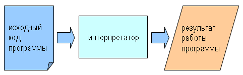
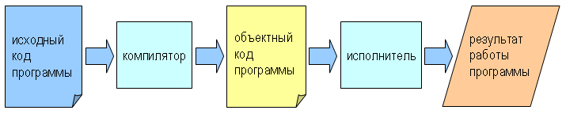

Цель этой книги — научить вас мыслить как программист.
Этот способ мышления сочетает в себе элементы математического, инженерного и естественнонаучного мышления. Как математики, программисты используют формальные языки, чтобы выражать идеи (конкретно, алгоритмы). Как инженеры, они разрабатывают новые изделия (программы), собирают компоненты в системы, взвешивая альтернативы и находя компромиссы. Как ученые, они наблюдают поведение сложных систем, формулируют гипотезы и проверяют сделанные предположения.
Самым важным навыком для программиста является навык решения задач.
Решение задач предполагает способность формулировать задачи, творчески обдумывать решения, и выражать решения ясно и точно. Оказывается, процесс обучения программированию — отличная возможность для развития навыка решения задач.
Продвигаясь по пути программирования, вы будете учиться программировать, что полезно само по себе. Но одновременно программирование будет способствовать развитию ваших интеллектуальных навыков.
Язык программирования, который вы будете изучать, — Python. Python является языком высокого уровня. Другие языки высокого уровня, о которых вы могли слышать, это C++, PHP, Java.
Как можно заключить из термина язык высокого уровня, существуют также языки низкого уровня, иногда называемые машинными языками или ассемблерными языками. Строго говоря, компьютеры могут выполнять только программы на машинных языках. Следовательно, программы, написанные на высокоуровневом языке, должны быть преобразованы в программы на машинном языке, прежде чем они смогут выполняться на компьютере. Эта дополнительная обработка занимает некоторое время, что является небольшим недостатком высокоуровневых языков.
Но их преимущества огромны. Во-первых, на языке высокого уровня намного легче программировать. Программы на высокоуровневом языке требуют меньше времени для написания, они короче и легче читаются, и они с большей вероятностью являются корректными. Во-вторых, высокоуровневые языки переносимы, а это значит, что программы, написанные на них, могут выполняться на компьютерах разных типов после внесения минимальных изменений, или вовсе без изменений. Программы на языках низкого уровня могут выполняться только на компьютерах одного типа, и должны быть переписаны для того, чтобы выполняться на других.
Благодаря этим преимуществам, почти все программы пишутся на языках высокого уровня. Низкоуровневые языки используются только для немногочисленных специальных приложений.
Два типа программ преобразуют программы, написанные на высокоуровневом языке в программы на языке низкого уровня: интерпретаторы и компиляторы.
Интерпретатор читает программу на языке высокого уровня и исполняет ее, то есть делает то, что предписывает программа. Он обрабатывает программу, читая по одному предложения программы и выполняя их.
Компилятор читает программу и преобразует ее полностью, прежде чем программа начнет выполняться. Текст программы на высокоуровневом языке называется исходным кодом, а преобразованная программа — объектным кодом или исполняемым кодом. Когда программа откомпилирована, можно выполнять ее много раз без дальнейших преобразований.
Многие современные языки программирования используют оба процесса. Они вначале компилируются в язык более низкого уровня, называемый байт-код, а затем байт-код интерпретируется программой, называемой виртуальная машина.
Python использует оба процесса, хотя его часто называют интерпретируемым языком.
Эта книга предполагает, что вы работаете с Python версии 2.x. Текущая версия Python (август 2012), доступная для скачивания на сайте www.python.org — версия 2.7.3. Примеры, приведенные в книге будут работать и на более ранних версиях 2.x.
На Python версии 3.x многие примеры работать не будут. Это не должно вас расстраивать, так как, во-первых, Python версии 2.x не собирается сходить со сцены и в ближайшие годы будет сосуществовать c Python 3.x, и, во-вторых, полученные вами знания и навыки при работе с версией 2.x безусловно будут необходимы и при работе с версией 3.x.
Если на вашем компьютере установлена ОС семейства Linux, то (почти наверняка) в ней имеется Python версии 2.x. Все, что вам нужно в этом случае, — начать им пользоваться. Если вам нужна дополнительная информация, то Google поможет вам узнать, как установить Python в ОС семейства Linux.
Если вы работаете в ОС Windows, то вам придется самостоятельно установить Python и подготовиться к работе с ним. Google поможет вам узнать, как установить Python под Windows. Будьте внимательны: для работы с этой книгой вам нужно установить Python версии 2.x, а не 3.x.
Есть два способа работы с Python: интерактивный режим и режим выполнения скрипта.
Работа в интерактивном режиме представляет собой диалог пользователя с программой-интерпретатором языка Python. Пользователь вводит предложения Python с клавиатуры, и интерпретатор немедленно выводит результат:
$ python
Python 2.5.1 (r251:54863, May 2 2007, 16:56:35)
[GCC 4.1.2 (Ubuntu 4.1.2-0ubuntu4)] on linux2
Type "help", "copyright", "credits" or "license" for more information.
>>> print 1 + 1
2
Этот пример показывает запуск и короткий диалог интерпретатора Python в консоли ОС Ubuntu (популярной операционной системы семейства Unix). Хотя большинство примеров в этой книге используют командную строку Unix (с приглашением $), работа с Python из консоли ОС Windows выполняется аналогично. В следующем примере интерпретатор Python запускается из командной строки Windows:
C:\>python
Python 2.7.2 (default, Jun 12 2011, 15:08:59) [MSC v.1500 32 bit (Intel)] on win32
Type "help", "copyright", "credits" or "license" for more information.
>>> print 1 + 1
2
Первая строка этого примера — команда, запускающая интерпретатор Python. Обратите внимание, что имя программы-интерпретатора python начинается с маленькой буквы, тогда как название языка Python пишется с большой буквы. Следующие строки — сообщения интерпретатора. Далее идет строка, начинающаяся с символов `>>>`. Это приглашение Python. Интерпретатор выводит приглашение, чтобы показать, что он готов к получению от пользователя предложений на языке Python. Мы ввели print 1 + 1, и интерпретатор ответил: 2.
Другой способ работы с Python состоит в том, чтобы сохранить программу в файле, а затем выполнить содержимое этого файла с помощью программы-интерпретатора. В этом случае программа, сохраненная в файле, называется скриптом. Например, создадим в текстовом редакторе файл firstprogram.py с таким содержанием:
print 1 + 1
По существующему соглашению, имена файлов с программами Python заканчиваются на .py.
Чтобы выполнить эту программу, нужно сообщить интерпретатору имя файла со скриптом:
$ python firstprogram.py
2
В примерах в этой книге используются как интерактивный режим интерпретатора Python, так и режим выполнения скриптов. Примеры, использующие интерактивный режим, начинаются с приглашения Python.
Работать в интерактивном режиме удобно для проверки коротких кусков кода, так как вы получаете немедленный результат. Думайте об этом, как о листке бумаги под рукой, на котором быстро можно что-то набросать, чтобы разобраться с возникшим вопросом. А вот программу длиннее нескольких строк лучше оформить как скрипт.
Программа — это последовательность инструкций для компьютера, описывающая, как выполнять вычисления или обработку данных. Компьютер может выполнять математические вычисления, например, решать уравнения. Он также может обрабатывать текстовые, видео, аудио и другие данные. Примерами обработки данных являются поиск и замена текста в документе, и компиляция программы.
Инструкции компьютеру выглядят по-разному в разных языках программирования, но несколько базовых конструкций имеются почти в каждом языке:
Получить данные с клавиатуры, из файла или с другого устройства.
Отобразить данные на экране или послать данные в файл или другое устройство.
Выполнить математические операции, такие как сложение и умножение.
Проверить, выполняется ли определенное условие, и если да, то выполнить последовательность инструкций, соответствующую этому условию.
Выполнять некоторую последовательность инструкций неоднократно, обычно с некоторыми отличиями.
Хотите верьте, хотите нет, но это практически все. Каждая программа, которую вы когда-либо использовали, не важно, насколько сложная, собрана из подобных конструкций. Таким образом, можно описать программирование как процесс разбиения большой сложной задачи на все более меньшие подзадачи до тех пор, пока подзадачи не станут достаточно простыми для того, чтобы выполнить их с помощью описанных выше базовых конструкций.
Программирование — это сложный процесс, и, поскольку его выполняют люди, в программу часто закрадываются ошибки. Несколько причудливо, ошибки программирования называют багами (англ.: жук), а процесс их локализации и исправления — отладкой (англ.: debugging — обезжучивание :-) ).
В программе могут встретиться три вида ошибок: синтаксические ошибки, ошибки выполнения и семантические ошибки. Для того, чтобы находить и устранять ошибки эффективнее, полезно уметь различать эти три вида ошибок.
Python может выполнять программу только в том случае, если программа синтаксически корректна; иначе выполнение прекращается и возвращается сообщение об ошибке. Синтаксис (syntax) имеет дело со структурой и правилами построения предложений в некотором языке. Например, в русском языке, предложение должно начинаться с большой буквы и заканчиваться точкой. это предложение содержит синтаксическую ошибку (syntax error). Так же, как и это
Для большинства читателей несколько синтаксических ошибок в тексте не являются большой проблемой, вот почему мы можем читать поэзию э. э. каммингса, не разражаясь сообщениями об ошибках. Python не настолько терпимый. Если где-то в вашей программе есть синтаксическая ошибка, Python выведет сообщение об ошибке и завершится, не выполнив программу. Поначалу, занявшись программированием, вы будете часто видеть сообщения о синтаксических ошибках. Однако, по мере приобретения опыта, вы будете делать все меньше ошибок и находить их быстрее.
Второй тип ошибок — ошибки выполнения (runtime error). Если перевести “runtime error” с английского дословно, то получится “ошибка времени выполнения”. Такие ошибки могут возникнуть только во время выполнения программы. Их еще называют исключениями (exception), потому что их возникновение означает, что в ходе выполнения программы произошло что-то исключительное (и плохое).
Ошибки выполнения редко случаются в простых программах, с которых мы начинаем изучение программирования. Так что может пройти какое-то время, прежде чем вы столкнетесь с такой ошибкой.
Третий тип ошибок — семантические ошибки (semantic error). Если в вашей программе есть семантическая ошибка, программа будет выполняться успешно в том смысле, что компьютер не выдаст сообщений об ошибках, но (!) ваша программа не будет делать то, что нужно. Программа будет делать что-то другое.
А именно, она будет делать то, что вы запрограммировали.
Проблема здесь в том, что программа, которую вы написали, — не та, которую вы хотели написать. Смысл программы (ее семантика) неправильный. Нахождение семантических ошибок может быть непростым делом, поскольку оно требует от вас идти в обратном направлении, от неправильных результатов работы программы к источнику проблемы.
Один из важнейших навыков, который вы приобретете, занимаясь программированием, — это навык отладки. Отладка — одна из наиболее интеллектуально насыщенных и интересных частей программирования.
В некотором смысле, отладка похожа на работу детектива. У вас есть улики — видимое поведение программы — и вам нужно вывести из них причины такого поведения.
Отладка также похожа на экспериментальную науку. Когда у вас появляется предположение о том, что именно не так в вашей программе, вы вносите изменения в программу и пробуете снова. Если ваша гипотеза верна, то сделанные изменения приведут к ожидаемому результату и вы сделаете шаг по направлению к работающей программе. Если же гипотеза ошибочна, вам придется придумать новую. Как говорил Шерлок Холмс, “Когда вы исключите невозможное, то, что останется, каким бы невероятным оно ни казалось, должно быть правдой.” (А. Конан-Дойль, Знак четырех)
В последующих главах вы узнаете больше об отладке и других практиках программирования.
Естественные языки — это языки, на которых говорят люди, такие как русский, английский или испанский. Они не были разработаны людьми (хотя люди и пытаются упорядочить их), они развились естественным путем.
Формальные языки — это языки, разработанные людьми для специальных приложений. Например, обозначения, используемые математиками, являются формальным языком, который отлично подходит для описания отношений между числами и символами. Химики используют формальный язык для того, чтобы представлять химическую структуру молекулы. И, что наиболее важно для нас:
Языки программирования — это формальные языки, которые предназначены для описания компьютерных вычислений.
Формальные языки тяготеют к строгим синтаксическим правилам. Например, 3+3=6 есть синтаксически правильное математическое утверждение, а 3=+6$ — неправильное. H2O есть синтаксически правильная химическая формула, а 2Zz — неправильная.
Синтаксические правила бывают двух видов: относящиеся к лексемам (token) и структуре. Лексемы — это базовые элементы языка, такие, как слова, числа и обозначения химических элементов. Одна из проблем с 3=+6$ состоит в том, что $ не является допустимой лексемой в математике (по крайней мере, насколько я знаю). Аналогично, 2Zz неверно потому, что не существует элемента, обозначаемого Zz.
Процесс выделения отдельных лексем называется лексическим анализом, или лексическим разбором.
Второй тип синтаксических правил имеет дело со структурой предложения, то есть, с тем, какие конструкции образуют лексемы. Предложение 3=+6$ является структурно неправильным, потому что нельзя располагать знак плюс сразу после знака равенства. Подобным же образом, в молекулярной формуле числовой индекс должен идти после наименования химического элемента, а не перед ним.
Когда вы читаете предложение на русском языке или предложение на формальном языке, вам приходится разбираться, какова структура предложения (хотя для естественного языка вы делаете это не задумываясь). Этот процесс называется синтаксическим анализом, или синтаксическим разбором.
Например, когда вы слышите “кнут и пряник”, вы понимаете, что “кнут” и “пряник” есть существительные, однородные члены предложения, связанные союзом “и”. Как только вы синтаксически проанализировали предложение, вы можете понять, что оно значит, другими словами, вы можете узнать смысл предложения. Если вы знаете, что такое кнут, и что такое пряник, вы поймете общий смысл этого предложения.
Хотя формальные и естественные языки имеют много общего — лексемы, структуру, синтаксис и семантику — есть также много отличий:
Естественные языки полны неоднозначностей, с которыми люди справляются, используя контекстную и другую информацию. Формальные языки разработаны так, чтобы быть почти или совершенно однозначными, а это значит, что любое предложение имеет ровно одно значение, безотносительно контекста.
Чтобы скомпенсировать неоднозначность и избежать неправильного понимания, естественные языки используют избыточность. В результате, они часто многословны. Формальные языки менее избыточны и более кратки.
Естественные языки полны идиом и метафор. Если кто-то говорит: “Кнут и пряник”, то, скорее всего, речь идет не о предметах кнуте и прянике. Тогда как в формальных языках имеется в виду именно то, что говорится.
Люди, всю жизнь говорившие на естественном языке — то есть, все люди — часто с трудом привыкают к формальным языкам. В некотором смысле, разница между формальным и естественным языком такая же, как разница между поэзией и прозой, и даже больше:
Слова в поэтической речи используются как из-за их звучания, так и из-за их значения, и произведение в целом порождает эффект эмоционального отклика. Неоднозначность в поэзии не только общепринята, но часто применяется нарочно.
Буквальное значение слов является более важным, чем в поэзии, и структура текста также привносит значение. Проза лучше поддается анализу, чем поэзия, но все же часто семантически неоднозначна.
Значение (смысл) компьютерной программы однозначно и буквально, и может быть полностью понято посредством анализа лексем и структуры предложений.
Вот несколько советов по чтению программ (и текстов на других формальных языках). Первое, помните, что формальные языки гораздо более плотные, чем естественные, поэтому требуется больше времени, чтобы читать на них. Кроме того, очень важна структура текста на формальном языке, и привычное нам чтение сверху вниз и слева направо обычно не самый лучший вариант. Научитесь мысленно разбирать программу, выделяя лексемы и интерпретируя структуру. И, наконец, детали имеют значение. Такие незначительные мелочи, как ошибки написания или неправильная пунктуация, с которыми мы легко справляемся в естественных языках, могут существенно изменить смысл текста на формальном языке.
Традиционно, первая программа, которую пишут изучающие новый язык программирования, выводит слова “Hello, World!” (англ.: Привет, мир!).
На языке Python эта программа выглядит так:
print "Hello, World!"
Программа состоит из одного предложения – предложения print (англ.: печатать), которое, на самом деле, ничего не печатает на бумаге, а выводит переданное ему значение на экран. В данном случае оно выводит на экран слова:
Hello, World!
Кавычки в программе отмечают начало и конец строкового значения; они не выводятся на экран.
Некоторые программисты судят о достоинствах языка программирования по тому, насколько проста и компактна программа “Hello, World!”, написанная на этом языке. Если следовать такому подходу, то Python замечательно хорош!
Напишите по-русски предложение с понятной семантикой, но неправильным синтаксисом. Напишите другое предложение, синтаксически корректное, но содержащее семантические ошибки.
Запустите интерпретатор Python в интерактивном режиме. Введите 1 + 2 и нажмите Ввод. Python вычислит это выражение, напечатает результат, и затем снова выведет приглашение. Звездочка * — это оператор умножения, а две звездочки ** — оператор возведения в степень. Поэкспериментируйте, вводя разные выражения и наблюдая, что печатает Python в ответ. Что произойдет, если вы используете оператор / (косая черта)? Такого ли результата вы ожидали? Объясните результат.
Введите 1 2 и нажмите Ввод. Python попытается вычислить выражение, но не сможет, потому что это выражение синтаксически неправильное. Он выведет сообщение об ошибке:
File "<stdin>", line 1
1 2
^
SyntaxError: invalid syntax
Во многих случаях Python показывает место, где он обнаружил ошибку, но это не всегда то место, где находится ошибка на самом деле. Поэтому вам необходимо тщательно изучить синтаксические правила.
В данном случае Python жалуется потому, что между двумя числами отсутствует оператор.
Напишите еще три примера, которые приводят к синтаксической ошибке, если ввести их в строке приглашения Python. Объясните, почему каждый из примеров не является синтаксически правильным.
Введите print 'hello'. Python выполнит это предложение и выведет на экран указанную строку. Заметьте, что кавычки, в которые вы заключили строку, не выведены на экран. Теперь введите print '"hello"' и объясните результат.
Введите print cheese без кавычек. Вы получите что-то похожее на:
Traceback (most recent call last):
File "<stdin>", line 1, in ?
NameError: name 'cheese' is not defined
Это ошибка выполнения; конкретно, это ошибка NameError (англ.: ошибка имени), еще более конкретно, это ошибка, связанная с тем, что имя cheese не определено. Если вы пока не понимаете, что это значит, то поймете, прочитав следующую главу.
Введите 'This is a test...' в строке приглашения Python и нажмите Ввод. Заметьте, что произошло.
Теперь создайте и сохраните скрипт Python с именем test1.py и следующим содержанием:
'This is a test...'
Выполните его. Что происходит при выполнении этого скрипта? Теперь измените содержимое файла на:
print 'This is a test...'
и выполните его снова. Что произошло на этот раз?
Всякий раз, когда выражение вводится в интерактивном режиме, Python вычисляет его и выводит результат на следующей строке. 'This is a test...' — выражение, вычисленным значением которого является 'This is a test...' (точно так же, как вычисление выражения 42 дает значение 42). При выполнении скрипта, однако, вычисленные значения выражений не посылаются в вывод программы, так что нужно явно выводить их с помощью print.